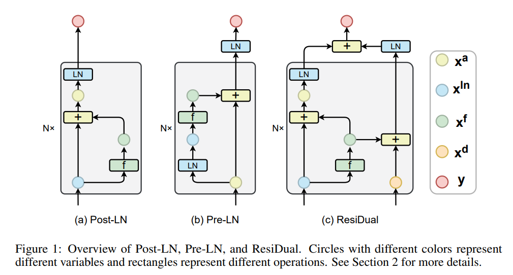
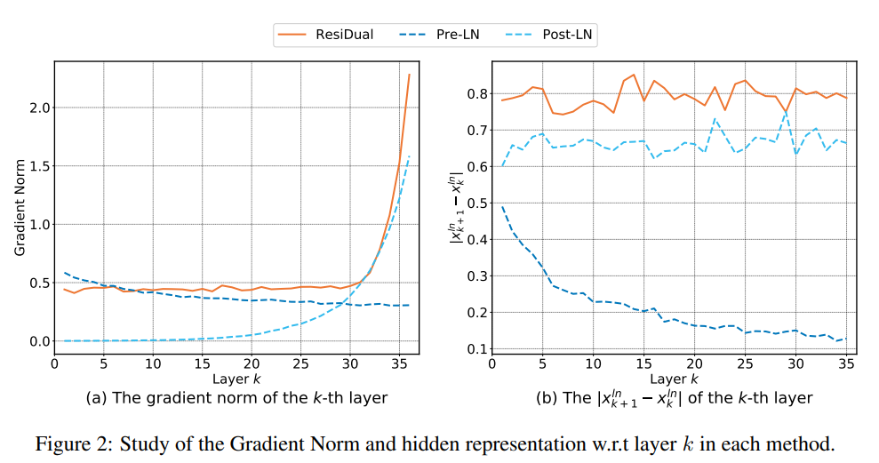
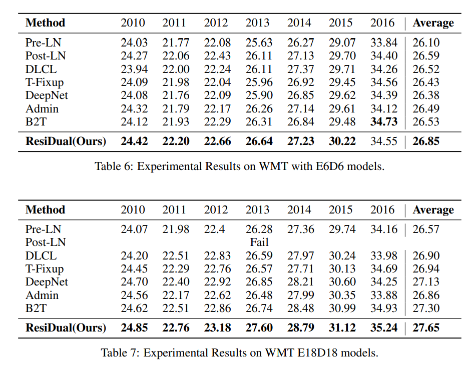
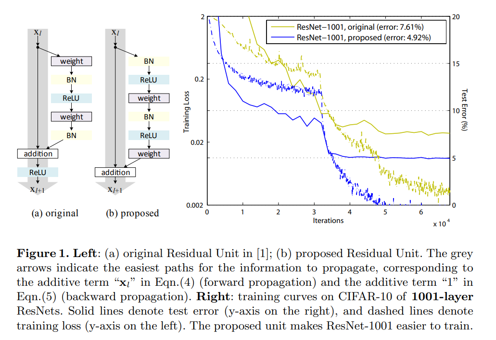
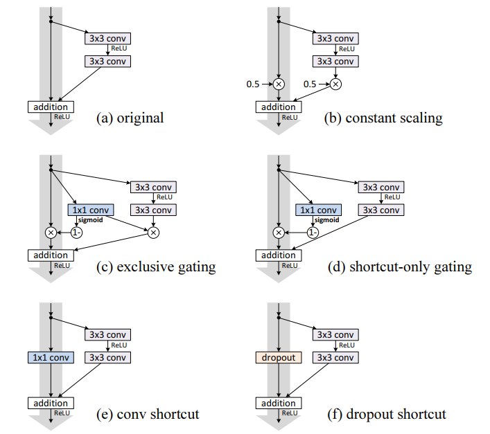
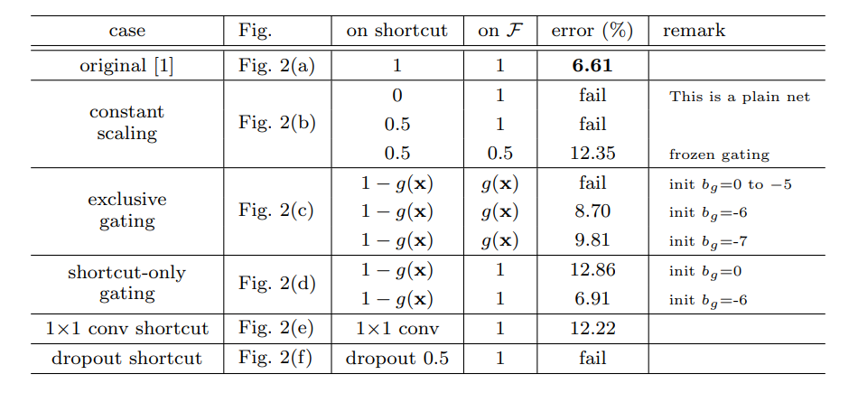
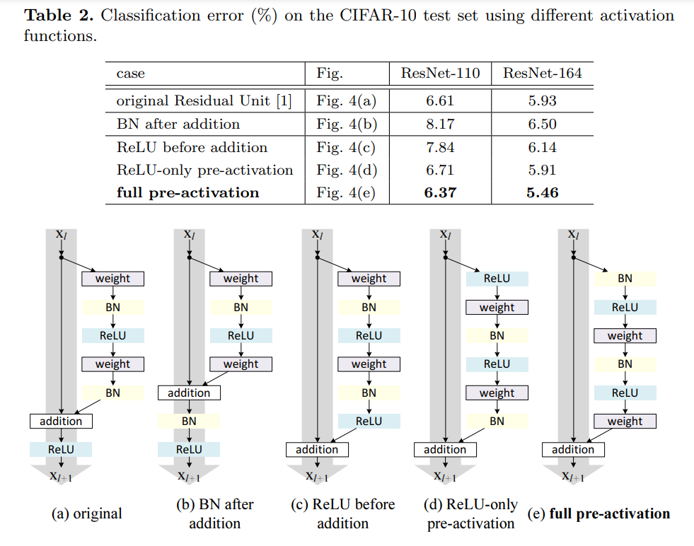

残差结构的讨论
本文主要围绕《ResiDual: Transformer with Dual Residual Connections》和《Identity Mappings in Deep Residual Networks》展开。
在深度学习中，乃至当今很火的transformer，残差是一个很重要的部分。
残差结构的讨论也是老生常谈的话题了，比如transformer中应该选择Pre Norm与Post Norm呢。
关于Pre Norm与Post Norm，苏神的博客“为什么Pre Norm的效果不如Post Norm？”有更多的讨论。
双残差
简介
《ResiDual: Transformer with Dual Residual Connections》结合Pre Norm与Post Norm，提出了ResiDual。

ResiDual吸收两者之长，避两者之短，没有了Post-LN的Gradient Vanish，也没有了Pre-LN的Representation Collapse。

实验结果：

残差块的有效性和改进
简介
何恺明提出的《Identity Mappings in Deep Residual Networks》针对残差块为什么有效，以及如何改进进行了一系列实验，最终得出一个结论：identity mapping支路应该要保证“clean”，也就是不应该在该支路后做ReLU激活函数，这才能保证前向传播和反向传播过程中的信息畅通无阻. 基于此，文章提出了新的残差块，其结构如下图：

对于ResNet V2来说，identity mapping支路没有ReLU激活函数，在前向传播和后向传播时都能够畅通无阻，真正实现了恒等映射. ResNet V2的“最终呈现结果”也比较简单，就是把原先residual block中的卷积、BN和ReLU调换了顺序。
实验结果：
文章更大的篇幅都在实验证明各种结构的效果。
下图是不同顺序的残差块结构和实验结果，指标是分类错误率:


不同的激活函数放置：

图(b) vs 图(a)：(b)中将BN层也放到了identity mapping支路中来，进一步改变了该支路的信息流，导致信息传播更为阻塞. 这也是为什么，这个结构的结果比baseline更差.
图(c) vs 图(a)：(c)将identity mapping分支的ReLU激活函数前移在了residual分支中，因此residual分支的输出永远是大于等于0的，这意味着模型在前向传播的过程中，数值只会单调递增，这无疑会影响模型的表征能力. 这也是为什么，这个结构的结果比baseline更差. 【residual分支其输出应该要保证在(-∞, +∞)】
图(d) vs 图(a)：(d)将identity mapping分支的ReLU激活函数放在了residual分支的第一个卷积前.
图(e) vs 图(a)：在上图(d)的基础上，(e)又将residual分支的BN进行了前移. ResNet V2将BN和ReLU统称为activation，图(e)相当于是在图(a)baseline的基础上做了一个pre-activation. 具体转换也可以见下图. 前移之后的结构既保证了identity mapping分支“clean”，也获得更优的模型效果.